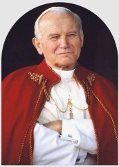

Muito mais que um curso, uma escola segura para a santidade.
Deus nos criou para sermos santos. Este curso tem uma finalidade: mostrar um caminho de santidade, que se percorre passo a passo, em comunidade.

“Esta é a vontade de Deus: a vossa santificação.”1 TESSALONICENSES 4,3
Antes de servos,
Deus quer amigos.
Dentro da comunidade sempre aprendemos isso. E, para sermos amigos de Deus, precisamos estar caminhando rumo à santidade. O curso existe para ajudar você a dar esses passos, com firmeza e sem caminhar sozinho.
“Já não vos chamo servos, mas amigos.”JOÃO 15,15

Homens e mulheres do nosso tempo que trilharam esse caminho.
Amamos aquilo que conhecemos.
Por isso o curso une formação, oração e estudo: para conhecer mais a Deus e, conhecendo, amá-Lo mais.
Ver o que vamos estudarO que vamos estudar
Encontros semanais em que, através da Bíblia e do Catecismo da Igreja Católica, vamos aprofundar nossa fé. Aqui entram temas que não dá para ver com calma no Seminário de Vida no Espírito Santo.
Obras de misericórdia
A santidade vivida no amor concreto ao próximo, cuidando do corpo e da alma.
Vícios e virtudes
Reconhecer o que nos afasta de Deus e cultivar, com a graça, o que nos aproxima d’Ele.
Os sete dons do Espírito Santo
Sabedoria, entendimento, conselho, fortaleza, ciência, piedade e temor de Deus.
Frutos do Espírito Santo
Os sinais de uma vida conduzida por Deus: caridade, alegria, paz, paciência e tantos outros.
Bem-aventuranças
O retrato do coração de Cristo e o caminho da verdadeira felicidade que Ele nos propõe.
Você sai do curso sabendo que seu lugar é no céu. Aqui estamos de passagem.
“A nossa pátria está nos céus.”
FILIPENSES 3,20Comece o seu caminho de santidade.
São 17 semanas de formação, oração e estudo, com a direção espiritual do Padre Mario Sartori.
As datas, os horários e o local da próxima turma serão divulgados em breve.
Quero ser avisado